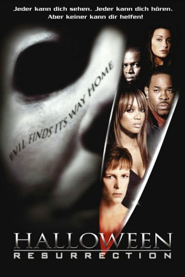

#7481 Halloween: Resurrection
 
 IMDB-Wertung: 4.1 / 10
IMDB-Wertung: 4.1 / 10  Tomatometer: 11
Tomatometer: 11  Metascore: 0
Metascore: 0 
6 junge Studenten lassen sich für das Projekt "Dangertainment" anwerben, um für eine Internet-Aktion spezielle Schockeffekte zu inszenieren. Als ihnen jedoch bewusst wird, dass sie genau in dem Haus mit dem Tode spielen, in dem mit Michael Myers einst der blanke Horror regierte, wird ihnen merklich unwohl. Erst das Versprechen eines College-Stipendiums, das jeder der jungen Leute nach erfolgreicher Durchführung des gefährlichen Projektes erhalten soll, überzeugt die Crew zu bleiben. Also werden Kameras installiert und die makabersten Inszenierungen eingeübt. Was die Gruppe jedoch nicht weiß: Es ist Halloween und Michael Myers ist heimgekehrt, um mitzuspielen! Und sein Spiel ist echt!
Jahr: 2002
Dauer: 89 Minuten
FSK: 18
Land: USA Studio: Dimension FilmsTonspuren: DTS - ,
Untertitel:
Auflösung: 1080p (1920x816) Größe: 7761 MB
Genre: Thriller, Horror, Komödie
Regisseur: Rick Rosenthal
Drehbuch: Debra Hill
Soundtrack:
Darsteller:
 Jamie Lee Curtis als Laurie Strode
Jamie Lee Curtis als Laurie Strode Brad Loree als Michael Myers
Brad Loree als Michael Myers- Busta Rhymes als Freddie Harris
- Bianca Kajlich als Sara Moyer
 Sean Patrick Thomas als Rudy
Sean Patrick Thomas als Rudy- Daisy McCrackin als Donna
 Katee Sackhoff als Jen
Katee Sackhoff als Jen Luke Kirby als Jim
Luke Kirby als Jim Thomas Ian Nicholas als Bill
Thomas Ian Nicholas als Bill Ryan Merriman als Myles Barton
Ryan Merriman als Myles Barton Tyra Banks als Nora
Tyra Banks als Nora- Billy Kay als Scott
 Lorena Gale als Nurse Wells
Lorena Gale als Nurse Wells Dan Joffre als Willie
Dan Joffre als Willie- Haig Sutherland als Aron
- Gary J. Tunnicliffe als Officer
 Ryan McDonald als Letter Sweater Guy
Ryan McDonald als Letter Sweater Guy- Charisse Baker als Teen Girl #2
 Natassia Malthe als French Maid
Natassia Malthe als French Maid- Kyle Labine als Teen Party Guy
- Rick Rosenthal als Professor
 David Lewis als Bob Green
David Lewis als Bob Green- Michael McCartney als Orderly
 Adam Arkin als Will Brennan , archive footage, uncredited
Adam Arkin als Will Brennan , archive footage, uncredited Michael Arthur als Police Officer #2 , uncredited
Michael Arthur als Police Officer #2 , uncredited- Artine Brown als Arresting Officer , uncredited
 Chris Durand als The Shape , archive footage, uncredited
Chris Durand als The Shape , archive footage, uncredited Josh Hartnett als John Strode / John Tate , archive footage, uncredited
Josh Hartnett als John Strode / John Tate , archive footage, uncredited Jason McKinnon als Boyfriend , uncredited
Jason McKinnon als Boyfriend , uncredited Donald Pleasence als Dr. Samuel 'Sam' Loomis , archive footage, uncredited
Donald Pleasence als Dr. Samuel 'Sam' Loomis , archive footage, uncredited Nancy Stephens als Marion Chambers Whittington , archive footage, uncredited
Nancy Stephens als Marion Chambers Whittington , archive footage, uncredited- Gus Lynch als Harold
- Marisa Rudiak als Nurse Phillips
- Brent Chapman als Franklin
- Brad Sihvon als Charley
- Kelly Nielson als Officer
- Chris Edwards als Fireman
- Ananda Thorson als Coroner
- Jaida Hay als Girlfriend , uncredited
- Robert Musnicki als Fireman , uncredited
- Tamara Taggart als News Reporter , uncredited
Datei: X:\FSK18-Collections\Halloween\Halloween Resurrection (2002, FSK18, 1920x816).mkv seit 15.11.2017
Festplatte: FSK18
 Es gibt insgesamt 14 Filme in der Gruppe 'FSK18-Collections\Halloween'
Es gibt insgesamt 14 Filme in der Gruppe 'FSK18-Collections\Halloween'